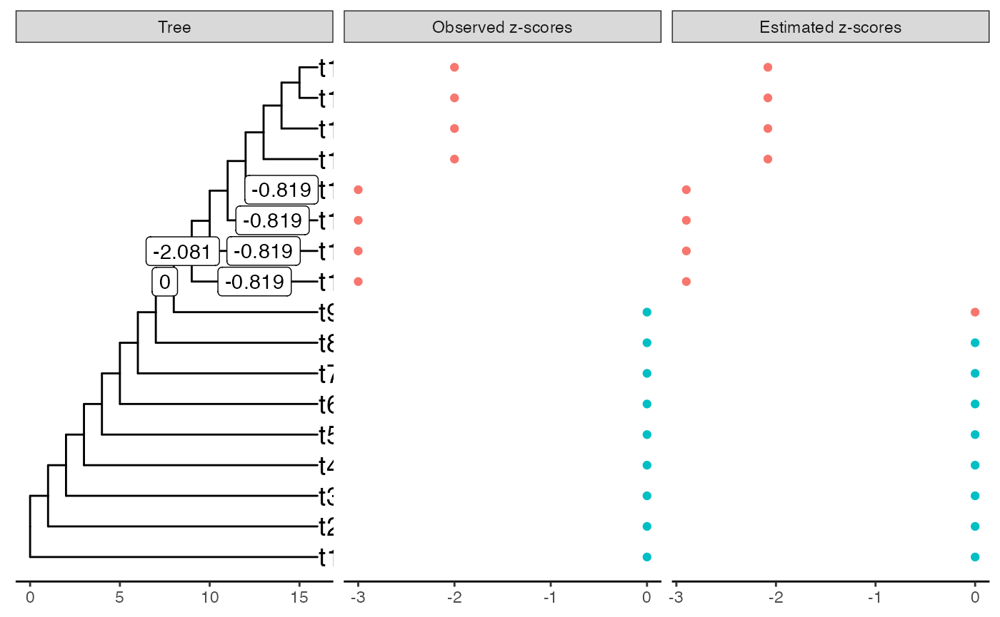
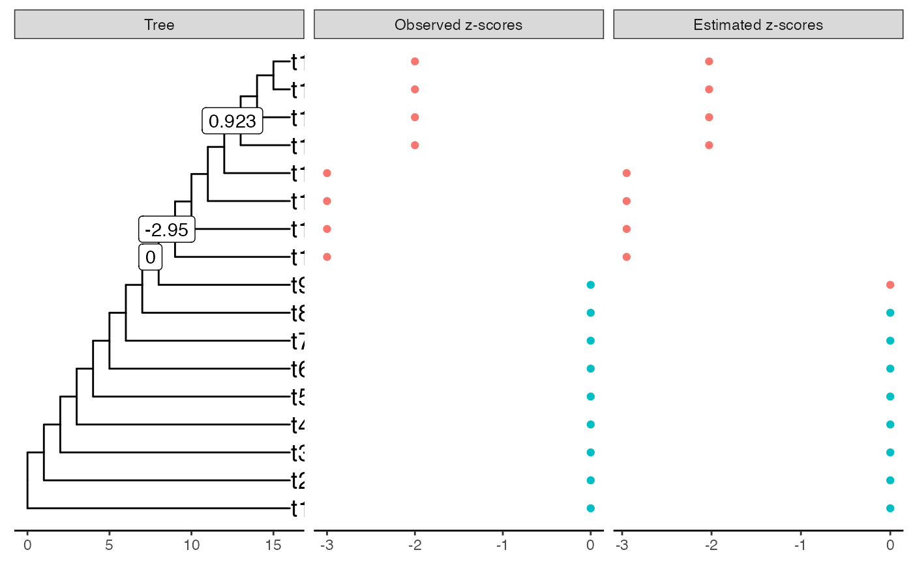
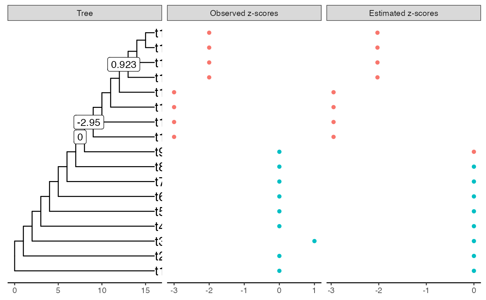
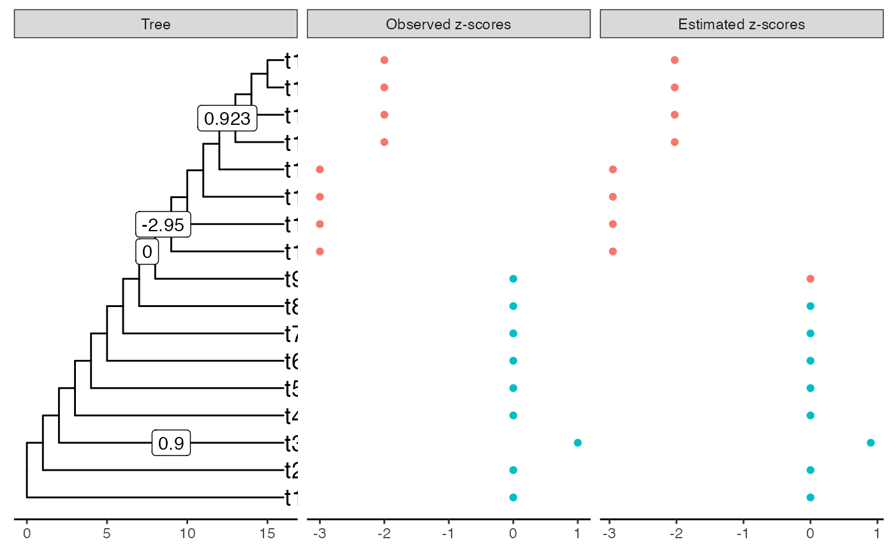

Tree
m <- 17 M <- 2 * (m - 1) tree <- stree(m, type = "left") edlength <- rep(1, M) edlength[1:M %% 2 == 1] <- (m - 1):1 tree$edge.length <- edlength mat_incid <- incidence_matrix(tree) plot(tree)
All shifts are negative
true_shifts <- rep(0, M) true_shifts[9 * M / 16] <- -3 true_zscores <- mat_incid %*% true_shifts true_zscores <- true_zscores[, 1] plot_shifts(tree, true_shifts, true_scores = true_zscores) #> Warning: Removed 32 rows containing missing values (geom_label).

Constraint on beta
estimation1 <- estimate_shifts(zscores = true_zscores, tree = tree, alphaOU = 1, lambda = 0.1, method = "lasso") estimation1 #> Tree is binary with 17 leafs and 32 branches #> Covariance matrix has been estimated from an OU with alpha = 1 and sigma = 1.414 #> --- #> Method: lasso #> Regularization parameter: lambda = 0.1 #> Objective value: 0.299 #> BIC: 36.893 #> pBIC: 54.404 #> --- #> Estimated shifts: 0 0 0 0 0 0 0 0 0 0 ... #> 2 shifts have been identified (ie 93.8 % of sparsity) #> A parsimonious solution would involve 2 shifts #> --- #> Observed z-scores: 0 0 0 0 0 0 0 0 0 -3 ... #> Estimated z-scores: 0 0 0 0 0 0 0 0 0 -2.987 ... #> 9 z-scores have been shifted (ie 47.1 % of sparsity) plot(estimation1) #> Warning: Removed 31 rows containing missing values (geom_label).
All z-scores are negative but shifts could be positive
true_shifts[13 * M / 16] <- 1 true_zscores <- mat_incid %*% true_shifts true_zscores <- true_zscores[, 1] plot_shifts(tree, true_shifts, true_scores = true_zscores) #> Warning: Removed 31 rows containing missing values (geom_label).

Constraint on beta
estimation2 <- estimate_shifts(zscores = true_zscores, tree = tree, alphaOU = 1, lambda = 0.1, method = "lasso") estimation2 #> Tree is binary with 17 leafs and 32 branches #> Covariance matrix has been estimated from an OU with alpha = 1 and sigma = 1.414 #> --- #> Method: lasso #> Regularization parameter: lambda = 0.1 #> Objective value: 0.568 #> BIC: 48.288 #> pBIC: 82.926 #> --- #> Estimated shifts: 0 0 0 0 0 0 0 0 0 0 ... #> 6 shifts have been identified (ie 81.2 % of sparsity) #> A parsimonious solution would involve 6 shifts #> --- #> Observed z-scores: 0 0 0 0 0 0 0 0 0 -3 ... #> Estimated z-scores: 0 0 0 0 0 0 0 0 0 -2.9 ... #> 9 z-scores have been shifted (ie 47.1 % of sparsity) plot(estimation2) #> Warning: Removed 27 rows containing missing values (geom_label).

Z-score are well recovered but the solution is absolutely not sparse. We should prioritize ancestral branches before
Constraint on yhat
estimation3 <- estimate_shifts(zscores = true_zscores, tree = tree, alphaOU = 1, lambda = 0.1, method = "lasso", constraint_type = "yhat") estimation3 #> Tree is binary with 17 leafs and 32 branches #> Covariance matrix has been estimated from an OU with alpha = 1 and sigma = 1.414 #> --- #> Method: lasso #> Regularization parameter: lambda = 0.1 #> Objective value: 0.394 #> BIC: 39.737 #> pBIC: 61.927 #> --- #> Estimated shifts: 0 0 0 0 0 0 0 0 0 0 ... #> 3 shifts have been identified (ie 90.6 % of sparsity) #> A parsimonious solution would involve 3 shifts #> --- #> Observed z-scores: 0 0 0 0 0 0 0 0 0 -3 ... #> Estimated z-scores: 0 0 0 0 0 0 0 0 0 -2.95 ... #> 9 z-scores have been shifted (ie 47.1 % of sparsity) plot(estimation3) #> Warning: Removed 30 rows containing missing values (geom_label).

All z-scores could be positive
true_shifts[2 * M / 16 + 1] <- 1 true_zscores <- mat_incid %*% true_shifts true_zscores <- true_zscores[, 1] plot_shifts(tree, true_shifts, true_scores = true_zscores) #> Warning: Removed 30 rows containing missing values (geom_label).
Constraint on yhat
estimation4 <- estimate_shifts(zscores = true_zscores, tree = tree, alphaOU = 1, lambda = 0.1, method = "lasso", constraint_type = "yhat") estimation4 #> Tree is binary with 17 leafs and 32 branches #> Covariance matrix has been estimated from an OU with alpha = 1 and sigma = 1.414 #> --- #> Method: lasso #> Regularization parameter: lambda = 0.1 #> Objective value: 0.894 #> BIC: 40.737 #> pBIC: 63.256 #> --- #> Estimated shifts: 0 0 0 0 0 0 0 0 0 0 ... #> 3 shifts have been identified (ie 90.6 % of sparsity) #> A parsimonious solution would involve 3 shifts #> --- #> Observed z-scores: 0 0 1 0 0 0 0 0 0 -3 ... #> Estimated z-scores: 0 0 0 0 0 0 0 0 0 -2.95 ... #> 9 z-scores have been shifted (ie 47.1 % of sparsity) plot(estimation4) #> Warning: Removed 30 rows containing missing values (geom_label).

No constraint
estimation5 <- estimate_shifts(zscores = true_zscores, tree = tree, alphaOU = 1, lambda = 0.1, method = "lasso", constraint_type = "none") estimation5 #> Tree is binary with 17 leafs and 32 branches #> Covariance matrix has been estimated from an OU with alpha = 1 and sigma = 1.414 #> --- #> Method: lasso #> Regularization parameter: lambda = 0.1 #> Objective value: 0.489 #> BIC: 42.58 #> pBIC: 69.82 #> --- #> Estimated shifts: 0 0 0 0 0.9 0 0 0 0 0 ... #> 4 shifts have been identified (ie 87.5 % of sparsity) #> A parsimonious solution would involve 4 shifts #> --- #> Observed z-scores: 0 0 1 0 0 0 0 0 0 -3 ... #> Estimated z-scores: 0 0 0.9 0 0 0 0 0 0 -2.95 ... #> 10 z-scores have been shifted (ie 41.2 % of sparsity) plot(estimation5) #> Warning: Removed 29 rows containing missing values (geom_label).
